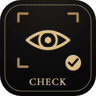

FUNCTIONAL NEURO TRAININGカメラでチェックトレーナー用
からだの神経チェック
カメラを使って、首と目の感覚をチェックします。音が出るようにしてください。
途中でやめても、終わったチェックまでは保存され、あとで続きからできます。
カメラで顔・目・口の動きを読み取ります。全部を通して測るか、使いたい検査だけを選んで測れます。
・映像も写真も、この端末の外へは送りません（端末の中で数字にするだけです）。
・医療の検査ではありません。痛み・めまい・気分の悪さが出たら、すぐにやめてください。
・明るい所でやってください。目のチェックでは、スマホを顔に近づけて持ちます。
・医療の検査ではありません。痛み・めまい・気分の悪さが出たら、すぐにやめてください。
・明るい所でやってください。目のチェックでは、スマホを顔に近づけて持ちます。
読み込み中…
検査を選んで測る
選んだ検査だけを、上から順に測ります。1つだけでも選べます。
おつかれさまでした
すべてのチェックが終わりました。
下の［コピー］で記録をそのままチャットに貼れます。